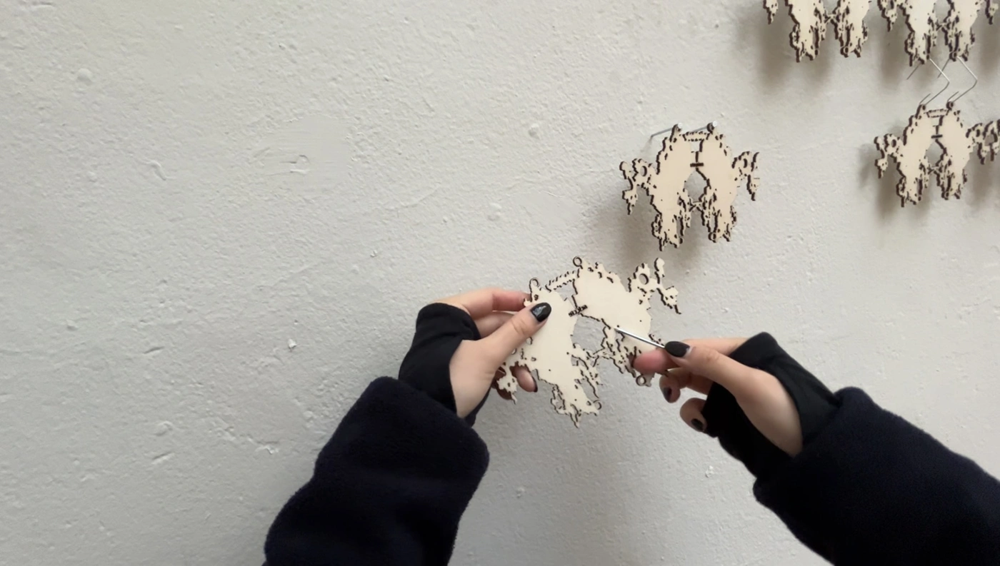
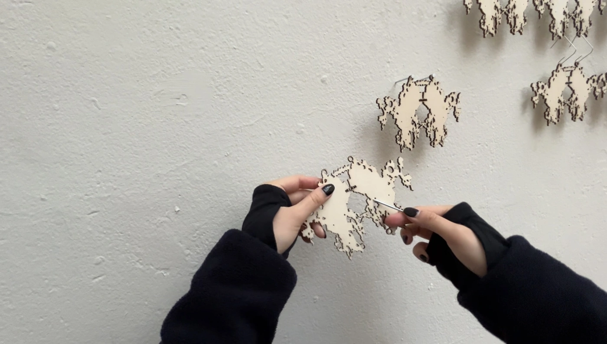

A typography project featuring a publication and textile installation.
Inspired by FBI documents, Utopian Files is a re-design of Bernadette Mayer's novel Utopia. Attached photographs were taken by Bernadette Mayer herself. The textile installation, inspired by chainmail body armor, is composed of 74 Rorschach-inspired shapes that were lasercut from wooden birch panels.
Inspired by FBI documents, Utopian Files is a re-design of Bernadette Mayer's novel Utopia. Attached photographs were taken by Bernadette Mayer herself. The textile installation, inspired by chainmail body armor, is composed of 74 Rorschach-inspired shapes that were lasercut from wooden birch panels.
Typeface — ...
Paper — ... 100GR
Printer — KABK Computer Workshop
Material — Birch wood, paper clips
Publication · Installation · CAD · Textile
31 pages (5 folders) | 225 × 310 mm | English
2000 × 1500 mm
The Hague, December 2023
Paper — ... 100GR
Printer — KABK Computer Workshop
Material — Birch wood, paper clips
Publication · Installation · CAD · Textile
31 pages (5 folders) | 225 × 310 mm | English
2000 × 1500 mm
The Hague, December 2023
 
